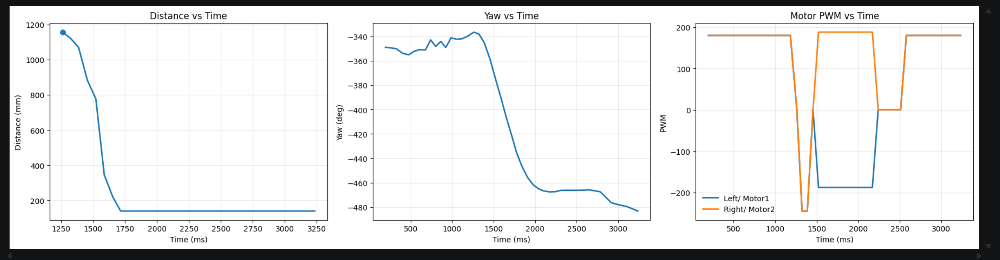
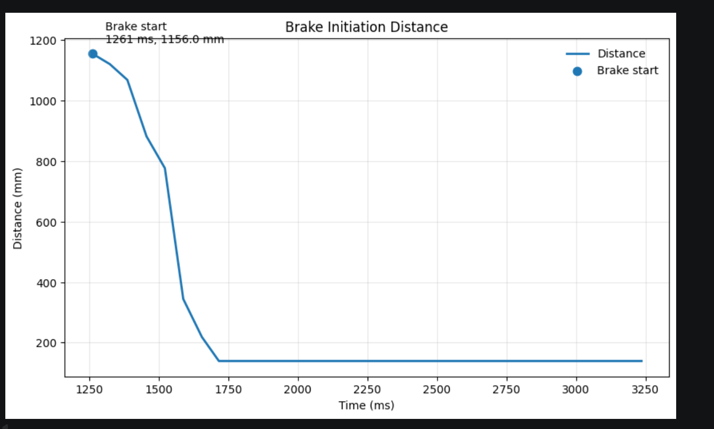
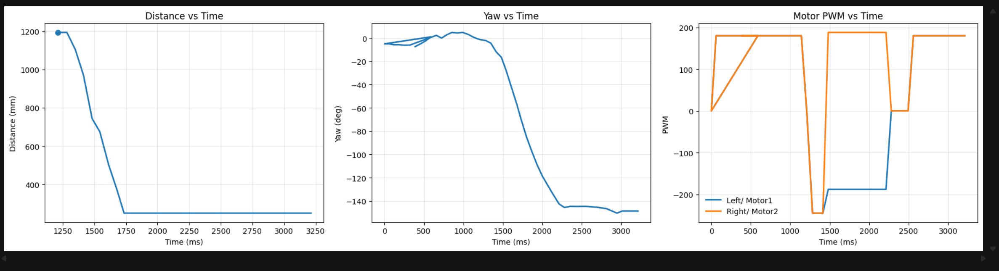
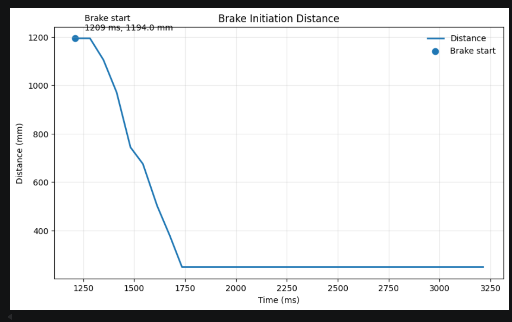
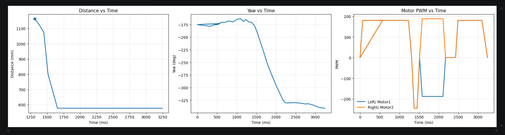
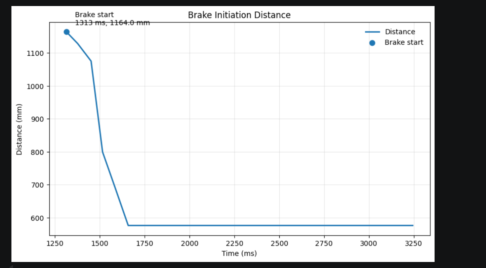
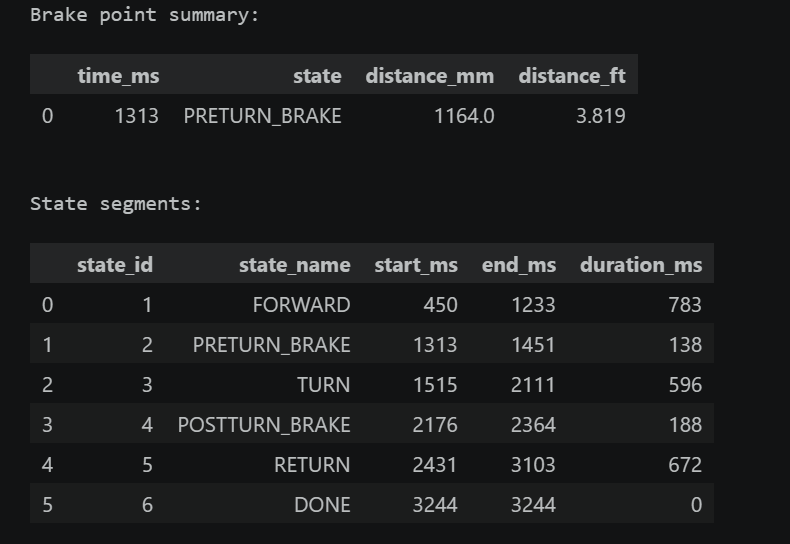

Lab 8: Stunts!
Lab 8
Goals
-
I choose to do the Task B stunt in this lab.
-
This experiment required the robot to drive quickly toward a wall and initiate a drift-style 180-degree turn when it was within about 3 ft of the wall. The task combined ToF-based distance sensing, IMU-based yaw estimation, and motor control to execute the maneuver reliably.
The Drift
To implement the drift stunt in Task B, I organized the behavior as a dedicated state machine instead of using one long open-loop motor command. The robot first drives quickly toward the wall, then enters a short pre-turn braking phase to reduce forward momentum, performs the turn, briefly stabilizes after the turn, and finally drives away in the return phase. This structure made the maneuver easier to debug and tune because I could separately adjust the timing and motor output of each stage, rather than trying to make the entire drift work with a single motor command.
Task B State Machine
enum TaskBState
{
TASKB_IDLE = 0,
TASKB_FORWARD = 1,
TASKB_PRETURN_BRAKE = 2,
TASKB_TURN = 3,
TASKB_POSTTURN_BRAKE = 4,
TASKB_RETURN = 5,
TASKB_DONE = 6
};
I controlled the stunt from the notebook through BLE so I could repeatedly test different parameter combinations without reflashing the board every time. In particular, I tuned the total runtime, log sampling period, forward PWM, and distance threshold sent from Python. This made the workflow much faster during debugging because I could change one parameter at a time, rerun the robot, and immediately compare the new behavior with the previous log.
BLE Command Interface for Task B
enum CommandTypes
{
...
START_TASKB_RUN = 35,
STOP_TASKB_RUN = 36,
SEND_TASKB_LOG = 37
};
case START_TASKB_RUN: {
int duration_ms = 6000;
int sample_ms = 20;
int forward_pwm_in = 160;
int trigger_mm_in = 914;
if (!get_next_int_checked(duration_ms)) return;
if (!get_next_int_checked(sample_ms)) return;
if (!get_next_int_checked(forward_pwm_in)) return;
if (!get_next_int_checked(trigger_mm_in)) return;
taskb_start_run(duration_ms, sample_ms, forward_pwm_in, trigger_mm_in);
break;
}
To decide when to begin the drift, I used the wall distance estimated from the front ToF sensor. When available, I used the Kalman Filter estimate instead of the raw sensor reading, since the raw ToF measurement became noisy during fast motion. I also did not rely on only one exact threshold. Instead, I used a finish distance together with an additional entry margin, so the robot could enter the braking phase slightly earlier and compensate for inertia before the turn. This was important because in practice the robot could not stop and rotate sharply enough if I waited until the exact target distance.
Distance Estimation and Turn Entry Logic
static float taskb_effective_dist_mm()
{
if (kf_initialized) return kf_dist_est_mm;
if (tof_recent_valid_available()) return (float)current_tof_reading;
return -1.0f;
}
...
taskb_turn_entry_mm = taskb_finish_mm + taskb_entry_margin_mm;
...
if (taskb_state == TASKB_FORWARD)
{
taskb_pwm_signed = taskb_forward_pwm;
motor_forward_pwm(taskb_forward_pwm);
if (taskb_dist_mm > 0.0f && taskb_dist_mm <= taskb_turn_entry_mm)
{
motor_active_brake();
taskb_pwm_signed = 0;
taskb_preturn_brake_start_ms = now_ms;
taskb_state = TASKB_PRETURN_BRAKE;
}
}
The actual drift maneuver is divided into multiple motion phases. In the pre-turn braking phase, I briefly drive the motors in reverse to reduce the robot’s forward momentum before the turn. Then I set the turn target relative to the current yaw angle and rotate until the measured yaw change reaches the desired turning progress. This approach worked better than simply commanding a fixed spin time, because I could use the IMU to stop the turn based on actual rotation instead of only elapsed time.
Pre-turn Braking and Yaw-Based Turn Control
else if (taskb_state == TASKB_PRETURN_BRAKE)
{
taskb_pwm_signed = -taskb_preturn_brake_pwm;
motor_backward_pwm(taskb_preturn_brake_pwm);
if ((now_ms - taskb_preturn_brake_start_ms) >= taskb_preturn_brake_ms)
{
motor_active_brake();
taskb_pwm_signed = 0;
taskb_start_yaw_deg = yaw_deg;
taskb_target_yaw_deg =
wrap_angle_deg(taskb_start_yaw_deg + taskb_turn_dir * taskb_turn_delta_deg);
taskb_turn_start_ms = now_ms;
taskb_turn_progress_deg = 0.0f;
taskb_state = TASKB_TURN;
}
}
else if (taskb_state == TASKB_TURN)
{
float yaw_from_start = yaw_deg - taskb_start_yaw_deg;
taskb_turn_progress_deg = fabs(yaw_from_start);
bool reached_angle =
(turn_elapsed >= taskb_turn_min_ms) &&
(taskb_turn_progress_deg >= (taskb_turn_delta_deg - taskb_turn_stop_band_deg));
bool timed_out = (turn_elapsed >= taskb_turn_timeout_ms);
if (reached_angle || timed_out)
{
motor_active_brake();
taskb_pwm_signed = 0;
taskb_postturn_brake_start_ms = now_ms;
taskb_state = TASKB_POSTTURN_BRAKE;
}
else
{
taskb_turn_step();
}
}
A major part of this lab was not only making the stunt work, but also making the data logging reliable enough to analyze it afterward. I logged time, raw ToF distance, Kalman-filtered distance, yaw, target yaw, signed PWM, and the current Task B state. During debugging, I found that BLE transmission was sensitive to message length and timing, so I formatted the log as compact CSV strings and scaled floating-point values before transmission. Specifically, I multiplied distance values by 100 and yaw values by 1000, converted them to integers, and then reconstructed the original units in Python after reception. I also spent time improving the BLE log transfer itself so the early part of the run would not be lost, because for this experiment it was especially important to capture the exact brake-start point near the wall.
Compact CSV Logging for BLE Transmission
static void taskb_append_log(unsigned long t_rel_ms)
{
if (taskb_log_len >= TASKB_LOG_BUF_SIZE) return;
taskb_t_ms_buf[taskb_log_len] = t_rel_ms;
taskb_raw_dist_buf[taskb_log_len] =
tof_recent_valid_available() ? (float)current_tof_reading : -1.0f;
taskb_kf_dist_buf[taskb_log_len] =
kf_initialized ? kf_dist_est_mm : -1.0f;
taskb_yaw_buf[taskb_log_len] = yaw_deg;
taskb_target_yaw_buf[taskb_log_len] = taskb_target_yaw_deg;
taskb_pwm_buf[taskb_log_len] = taskb_pwm_signed;
taskb_state_buf[taskb_log_len] = (int)taskb_state;
taskb_log_len++;
}
static void send_taskb_log_csv()
{
int n = taskb_log_len;
ble_send_csv_begin(
n,
"time_ms,raw_tof_mm,kf_dist_mm,yaw_deg,target_yaw_deg,pwm_signed,state"
);
for (int i = 0; i < n; i++)
{
char msg[MAX_MSG_SIZE];
snprintf(msg, sizeof(msg),
"%lu,%ld,%ld,%ld,%ld,%d,%d",
taskb_t_ms_buf[i],
(long)(taskb_raw_dist_buf[i] * 100.0f),
(long)(taskb_kf_dist_buf[i] * 100.0f),
(long)(taskb_yaw_buf[i] * 1000.0f),
(long)(taskb_target_yaw_buf[i] * 1000.0f),
taskb_pwm_buf[i],
taskb_state_buf[i]);
ble_tx_string(msg, BLE_TX_LINE_DELAY_MS);
}
send_end_marker();
}
After receiving the CSV log in the notebook, I converted the scaled values back to physical units and plotted the distance, yaw, and motor output over time. From these plots, I was able to identify the brake-start point, verify the full sequence of FORWARD → PRETURN_BRAKE → TURN → POSTTURN_BRAKE → RETURN, and confirm that the robot initiated braking and turning at approximately the intended wall distance.
Python-Side Unit Recovery and Brake Point Identification
df["raw_tof_mm"] = df["raw_tof_mm"] / 100.0
df["kf_dist_mm"] = df["kf_dist_mm"] / 100.0
df["yaw_deg"] = df["yaw_deg"] / 1000.0
df["target_yaw_deg"] = df["target_yaw_deg"] / 1000.0
df["dist_used_mm"] = df["kf_dist_mm"]
df.loc[df["dist_used_mm"].isna(), "dist_used_mm"] = df["raw_tof_mm"]
state2_df = df[df["state"] == 2].copy()
if len(state2_df) > 0:
brake_point = state2_df.iloc[0]
print("Brake start distance (mm):", brake_point["dist_used_mm"])
print("Brake start distance (ft):", brake_point["dist_used_mm"] / 304.8)
The Results
Results
Results
To evaluate the final Task B implementation, I performed three successful drift runs and recorded both videos and on-board logs for each trial. In all three runs, the robot completed the full maneuver sequence of forward motion, pre-turn braking, turning, post-turn stabilization, and return motion. The plots below summarize the measured wall distance, yaw evolution, and motor PWM output during each run, while the videos provide direct visual confirmation of the final drift behavior.
The logged data show that the robot consistently entered the PRETURN_BRAKE state before the turn and then transitioned through TURN, POSTTURN_BRAKE, and RETURN in the expected order. In addition, the brake initiation plots provide a more direct estimate of the wall distance at the moment braking began. These results indicate that the final control pipeline was not only able to complete the stunt, but also able to do so in a repeatable and analyzable way.
Run 1
In the first successful run, the robot executed the full drift sequence smoothly and completed the return phase without losing state continuity. The corresponding plots show a clear decrease in wall distance during the approach stage, followed by a distinct yaw change during the turn. The motor PWM plot also confirms the intended control pattern: forward acceleration, reverse braking, turning, and then forward return motion.


For this run, the brake initiation plot shows that the robot began the braking phase near the intended wall-distance region before entering the turn. This is important because the drift maneuver depends strongly on decelerating early enough to reduce forward momentum while still preserving enough speed to rotate effectively. The agreement between the video and the logged plots suggests that the state-machine timing and turn initiation logic were working as intended in this run.
Run 2
The second run showed similar behavior and further demonstrated repeatability. Compared with the first run, the overall shape of the distance, yaw, and PWM plots remained consistent, indicating that the robot was following the same control sequence rather than succeeding by chance. The video also shows that the robot approached the wall aggressively, initiated braking, rotated, and then exited the maneuver in a controlled way.


The second run again shows the expected sequence of approach, braking, turning, and return. In particular, the yaw trace confirms that the robot underwent a large heading change after the brake-start point, while the motor PWM plot shows that the braking and turning phases were clearly separated. This supports the interpretation that the robot did not simply skid randomly, but instead followed a deliberately structured drift maneuver controlled by the Task B state machine.
Run 3
The third run is the most representative example because both the video and the logged data clearly show the brake-start point and the subsequent turn progression. In this run, the robot transitioned into PRETURN_BRAKE at a measured distance that was reasonably close to the 3 ft requirement, and the state log also confirmed the full progression of FORWARD → PRETURN_BRAKE → TURN → POSTTURN_BRAKE → RETURN. This makes the third run especially useful for discussing the timing and distance consistency of the final implementation.


In the third run, the brake-start point was measured at approximately 1164 mm (about 3.82 ft) from the wall. Although this is somewhat larger than the ideal 3 ft target, it still falls in a practically acceptable range for a high-speed drift maneuver, especially considering sensor noise, floor friction variation, and the need to compensate for inertia. More importantly, once braking began, the yaw changed rapidly and the robot completed the rest of the drift sequence successfully. Therefore, this run shows that the final system was able to initiate the maneuver near the desired distance while preserving reliable execution of the turn itself.

Overall, the three successful trials demonstrate that the final drift controller is repeatable and that the robot can reliably complete the required stunt sequence. The videos verify the qualitative behavior, while the logged plots provide quantitative evidence of distance evolution, heading change, and motor actuation. Together, these results show that the robot was able to approach the wall quickly, initiate braking and turning near the target distance, and complete the drift maneuver in a controlled manner.
Blooper
It may be due to excessive steering inertia, friction between the left and right wheels, or asymmetric motor output, causing the vehicle to continue veering to the right after completing an approximately 90° turn.
Appendix
1. An announcement of AI usage
I used AI tools to support parts of this lab, mainly for webpage/HTML formatting, minor code edits and debugging, and polishing the written explanations for clarity and conciseness. Throughout the assignment, I verified the suggestions against the lab requirements, tested changes on my own setup, and made final design and implementation decisions independently based on my own understanding.